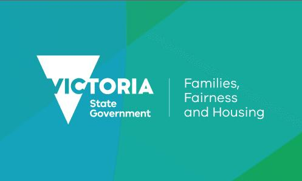

|
Everyone is welcome at MillHouse
Mill House is a Neighbourhood House in regional Victoria, Burke Street Maryborough. Mill House has been running for 30 years and has previously been known by other names such as Skill Share, Maryborough Learning Centre, Goldfields Employment & Learning Centre Inc. Despite its various iterations over the years the organisation’s goal of supporting residents and the community has never changed.
We provide a location for the community to make social connections and learn together. We provide access to internet, food security, classes and groups. We offer an all-abilities social cooking group, art classes, craft groups and a weekly community lunch. Mill House is a resource in the community, an information and referral point also providing intangible benefits such as community pride and sense of belonging, leadership development, community voice through advocacy & increased personal independence.
Our activity’s & programs are supported by & funded through the Foundation for Rural & Regional Renewal, Victorian State Government - Department of Families, Fairness and Housing, and has been supported by the Community Bank Avoca, Maryborough and St Arnaud.
|  |  |